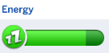

Summary
Allows you to customize a sim's waking routine, including order and actions. Possible priorities are: Bladder, Hygiene, Brush Teeth, Hunger, and Do Homework.
Features
Setting a Routine
The mod comes up with various clickable options under the new Routine menu when you click on your sim. They are listed in detail below in the "Comprehensive Breakdown" section. But rather than forcing you to confront all of the detail at once, I'm going to walk you through a couple examples of using the mod.
- The 3S Sim: We'd like our sim to do the three S's of hygiene: Bladder (wait, that's a B... well, you know what I mean), Hygiene (er, Shower), and Brush Teeth (there's no Shaving in the sims, so teeth brushing will have to do). So we go to the Routine menu and under Set Priority 1, choose Bladder. Under Set Priority 2, choose Hygiene. And under Set Priority 3, choose Brush Teeth. We'd also like our sim to only do this routine upon waking in the morning, so under Scheduling, we'll choose Morning (this is set as 4am to 12pm). Now all we need to do is click Enable Routine and we're good to go!
- The OCD Teeth Brushing Sim: For this sim, we're going to make someone who has some OCD kind of behavior going on. In their case, it manifests as wanting to brush their teeth over and over when they wake up. We're going to do it 5 times in a row, hitting the limit on the number of priorities our sim can have. So we go to the Routine menu and under Set Priority 1, choose Brush Teeth. Under Set Priority 2, choose Brush Teeth. And do the same for Set Priority 3, 4, and 5. For this sim, the routine is only tied to waking up with 50 or higher Energy; time of day doesn't matter. So we're going to leave Scheduling untouched, or set it to None if it was previously set to something. Finally, we'll click Enable Routine to make sure the routine will activate when the proper time comes. If all goes as intended, our sim will go brush their teeth five times in a row, every time they wake up with 50 or higher energy. That poor sim. :(
These are just two possible combinations you could do of many. It's all up to you to customize the routine how you want.
Comprehensive Breakdown
Everything for this mod is found under the new Routine menu, or a submenu within it.
Routine >
- Enable/Disable Routine: Sets whether the routine can activate, provided the conditions for it activating are met. These conditions are: The sim has woken up from a sleep-based interaction and has 50 or higher Energy Need. Also, if Scheduling is enabled, it's within the possible hours of activation.
- Clear Set Routine: Clears any routine priorities that are set (the stuff under Scheduling and Set Priority 1-5)
- Clear Queued Routine: Clears a routine that is currently being carried out. Recommended use is for debug purposes, if your sim gets stuck in a routine for some reason (this will usually look like they are standing around doing nothing for a strangely long period of time, during a time when you have reason to believe they should be carrying out a routine).
Routine > Scheduling
- None: Sets scheduling to nothing. If on nothing, the sim will ignore time of day when considering whether the routine can activate.
- Morning: The routine can only activate during the hours of 4am to 12pm.
- Night: The routine can only activate during the hours of 6pm to 2am.
Routine > Set Priority 1, Set Priority 2, Set Priority 3, etc. (goes up to 5)
- None: Sets priority to nothing.
- Bladder: Sets the priority to Bladder. This priority is completed by using the toilet and getting Bladder to full.
- Hygiene: Sets the priority to Hygiene. This priority is completed by taking a Shower or Bath and getting Hygiene to full.
- Brush Teeth: Sets the priority to Brush Teeth. This priority is completed by using a custom Brush Teeth interaction at any sink.
- Hunger: Sets the priority to Hunger. This priority is completed by eating anything, with Hunger increased a moderate amount by the end of it. The sim will prefer going for instant meals from a refridgerator.
- Homework (only Child and Teen): Sets the priority to Homework. This priority is completed by finishing Homework. Only one stage of finishing is needed, i.e. if no Homework is done, the sim will consider it complete when normal Homework is finished. If the normal Homework is already finished, the sim will consider it done when Extra Credit is finished.
Quick FAQ
If you just want quick info without reading the entirety of the Comprehensive Breakdown, or have further questions.
Q: When does the routine trigger?
A: The routine triggers upon waking up from a sleep-based interaction, provided Energy Need is at 50 or higher. So minimum would look like this:
The general idea here is to find a sweet spot where it's going to reliably trigger if your sim did a lot of sleeping to get their energy back, but it's not going to trigger every single time they lie down to nap a little bit.
Q: My routine isn't triggering, how do I get it to work?
A: Make sure that you used Enable Routine (if you did, it will read Disable Routine under the Routine menu), make sure that something is active under Set Priority 1, and that if Scheduling is enabled, it's within the proper time frame. Night is from 6pm to 2am, Morning is from 4am to 12pm.
Also, make sure that autonomy is turned on for the sim. One would think this is obvious, but I know I'm not the only one who plays sims with autonomy off sometimes, or with it off for the active sim. They won't be able to carry out their routine properly if they can't act autonomously.
Q: Why did my sim skip a step in their routine?
A: Sims can skip one or more steps in a routine under the right circumstances. This is intended, if the priority is currently impossible to fulfill. For example, if the priority is Homework and Homework is already done; if the priority is Hygiene and there is no Shower or Bath on the lot; if the priority is Bladder and the only Toilet on the lot is broken.
This is designed to minimize situations where a sim gets stuck in a routine, which would undoubtedly be a frustrating experience if it were to happen a lot.
Q: My sim is stuck in a routine, what do I do?
A: If your sim is stuck in a routine (this will usually look like they are standing around doing nothing for a strangely long period of time, during a time when you have reason to believe they should be carrying out a routine) go to the Routine menu and click "Clear Queued Routine." This will stop the current routine being carried out. Not to be confused with Clear Set Routine, which will clear your routine settings for that sim, putting them back to default.
Also, let me know on discord Triplis Station in the #mod-has-bug section if your sim does get stuck in a routine. Odds are it's a scenario I didn't account for that can be fixed, or I missed something in the logic of one of the scenarios I thought I was accouting for already.
Q: Is it normal for my sim to get temporarily derailed from carrying out their routine?
A: As far as I can tell, there should be no interruptions in a sim carrying out their routine on their end. However, if another sim tries to interact with them, they could get temporarily distracted by it. This may include visible or invisible prompts like "watch tv together," where the two sims aren't necessarily going to talk, but one is going to get called over by the other's interaction. If you want to get back to the routine ASAP, you can just cancel the interaction; otherwise, you may see a delay, but they'll get back to it eventually.
Credits
Thanks to Scumbumbo and SimGuruTwoLegs for helping me work out a script issue.
Thanks to Scumbumbo, alphabetsmells, and thepancake1 for input/insight on the design of completion for the Hunger priority.